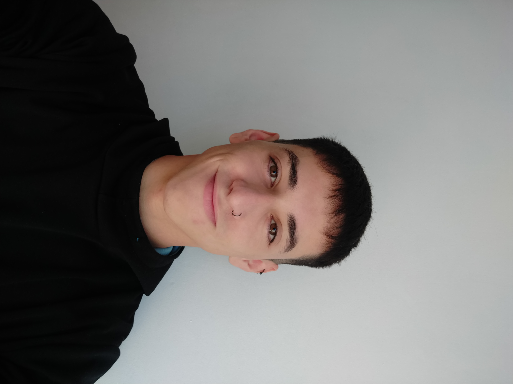

Soy uriel cuevas, vivo en Buenos Aires, Argentina naci el 22/07/2003 y estoy emprendiendo mi servicio como personal trainer tanto en este sitio web como en redes sociales como instagram (uriel__cuevas). Empeze a entrenar al rededor de los 15 años despues de una operacion de cintura que no me permitio seguir jugando a la pelota pero queria entrenar entonces empeze el gimansio sin saber nada y empenzando a indagar descubri como armar rutinas y alimentarme. Despues de medio año me di cuenta de lo mucho que me gustaba y empeze a hacer cursos y seguir investigando. A los 17 años deje el gimnasio por pandemia 2021 y baje muchisimo de peso por lo cual decidi empezar de nuevo pero en casa, despues de 3 meses empeze nuevamente el gimasio y dedique mi tiempo a full con el mismo lo cual me llevo a pesar de 47 kilos a 61 kilos, un cambio gigante para mi con el pasar de los dias empeza a tomarlo con mas calma pero con la misma pasion y hoy 2023 19/04/2023 que me encuentro escribiendo esto estoy pesando 54 kilos y mido 1.62, no tengo un gran fisico pero soy una persona saludable y atletica.

¿Que brindo?
¿Cuales son tus resultados?
Mi servicio son asesorias tanto online como prensencial con cupos limitados, ofrezco una rutina de entrenamiento y un plan de alimentacion de 1 mes, 2 meses o 3 meses, en los tres planes se obtienen los siguientes beneficios: 1-Rutina de entrenamiento 2-Plan de alimentacion 3-Seguimiento via whatsapp 24/7 Si usted quiere un plan vaya a Servicios donde estan todos los planes y obtenga el suyo!.